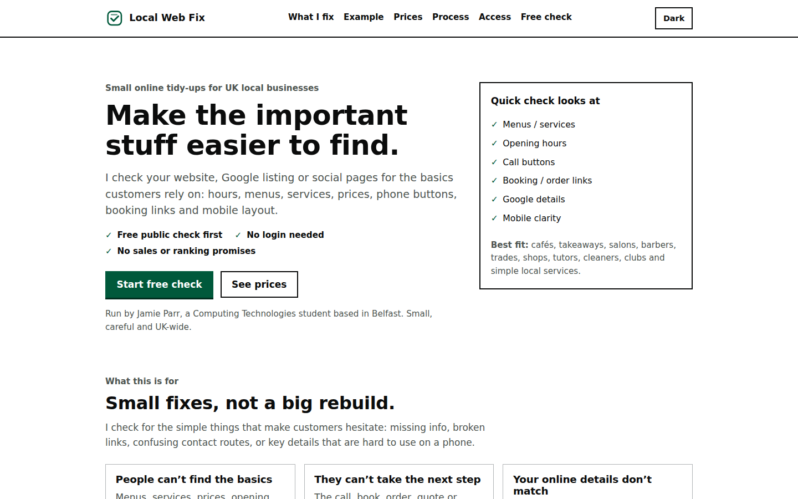
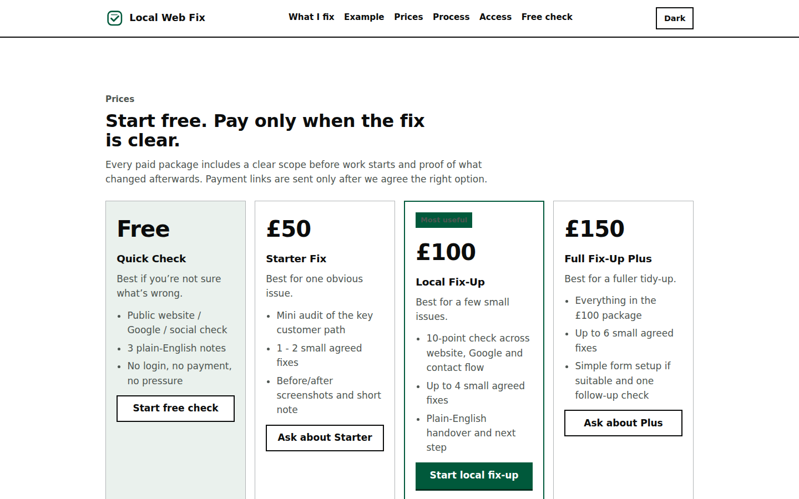
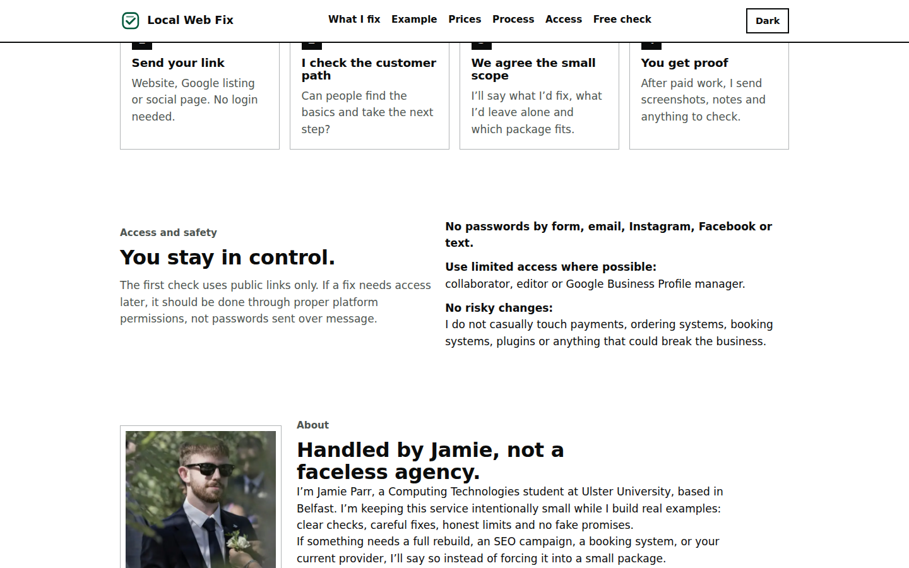

Why I built it
I wanted to practise designing a small-business website around an offer that was deliberately narrow rather than inventing another generic software dashboard. The idea was a service that checks ordinary customer-facing problems such as inconsistent opening hours, hard-to-find menus, awkward phone links and outdated booking links.
The point of the project is the product thinking around the website: what the offer is, what it is not, how pricing is explained and how someone gets from the homepage to an enquiry without unnecessary steps.
Screenshots from the public demo site.



What the concept includes
The site lays out a public-link check, example fixed-price packages, an enquiry flow, scope limits and guidance about safe access. Those pieces make the mock business feel complete enough to test as a website without pretending that I have completed client jobs through it.
The HTML still models an enquiry flow using Netlify Forms markup, but the published concept now disables the form for visitors because I am not currently taking work through it. The repository also keeps an unlisted payment-flow page as part of the mock customer journey.
What the code actually is
The implementation is deliberately simple: static HTML and CSS with a small JavaScript theme toggle stored in localStorage. There is no application framework or unnecessary backend.
The repository includes checks for required pages, local links and the form structure so a small markup mistake is less likely to break the main flow unnoticed.
What I learned from it
The harder part was deciding what to say and what not to promise. Pricing, access rules and scope have to make sense to somebody who does not care what technology the site uses.
It also pushed me to leave the implementation small. Adding more features would not automatically make the concept clearer or more convincing.
What I would improve next
If I take the concept further, I would test it with a few real small-business owners and simplify any wording or steps they found unclear. That would be more useful than pretending the site already has client results.